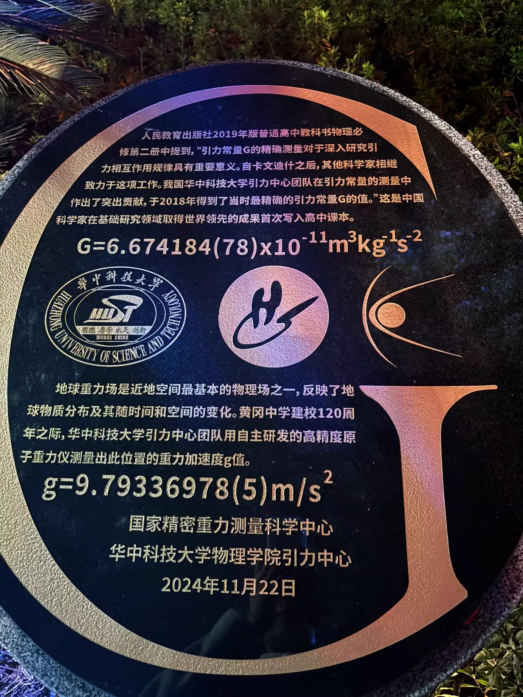
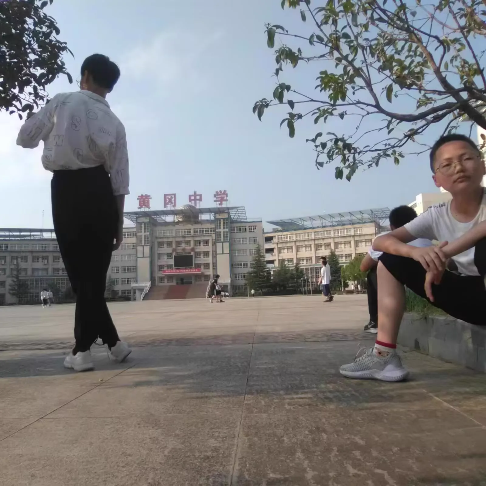

Journal · 2024-11-23
湖北省武汉市
2024年11月23日 02:21
秋风不解传乡信，
江月偏能照客愁！
黄州府，是我的“第二故乡”。
11月24日，我必须回去，
谁也拦不住我！
我愿追随五大洲学长们的步伐，
前往南湖路一号！


Nov 23, 2024 02:21
The autumn wind knows not how to carry letters home,
but the river moon does know how to shine on a traveler's sorrow!
Huangzhou is my "second hometown".
On November 24, I must go back,
and no one can stop me!
I wish to follow in the footsteps of my seniors across the five continents,
and head to No. 1 Nanhu Road!
23 nov. 2024 02:21
Le vent d'automne ne sait pas porter la lettre du pays,
mais la lune sur le fleuve sait éclairer le chagrin du voyageur !
Huangzhou est ma « seconde patrie ».
Le 24 novembre, je dois y retourner,
et personne ne pourra m'en empêcher !
Je veux suivre les pas de mes aînés des cinq continents,
et me rendre au n° 1 de la route Nanhu !
23.11.2024 02:21
Der Herbstwind weiß nicht, Briefe nach Hause zu tragen,
doch der Flussmond vermag es, die Sorge des Wanderers zu bescheinen!
Huangzhou ist meine „zweite Heimat“.
Am 24. November muss ich zurückkehren,
und niemand kann mich aufhalten!
Ich möchte den Spuren meiner älteren Kommilitonen auf den fünf Kontinenten folgen,
und zur Nanhu-Road Nr. 1 gehen!